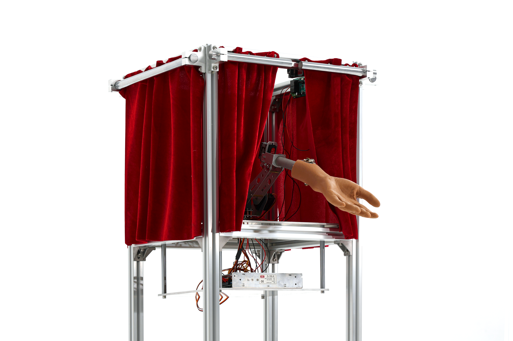

Coutesy Protocol
Interactive Mechanical Installation | Robotic Installation | Creative Computing
This project uses the metaphor of politeness as a social script to explore how cultural expectations, hierarchy, and the desire for acceptance gradually shape people’s language and behaviour. This interactive physical computing installation makes the invisible processes of self-regulation, conformity, and performed politeness tangible through digital evaluation and mechanical response.